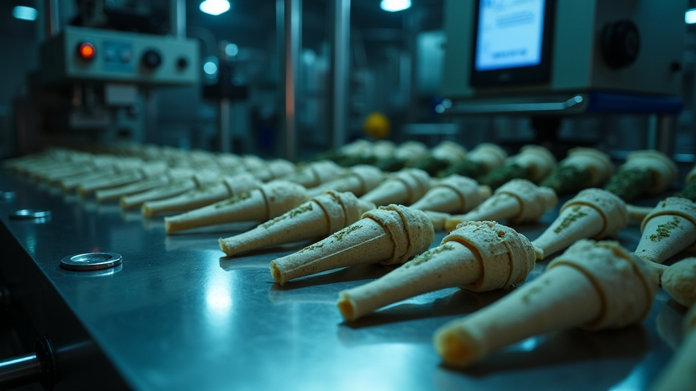
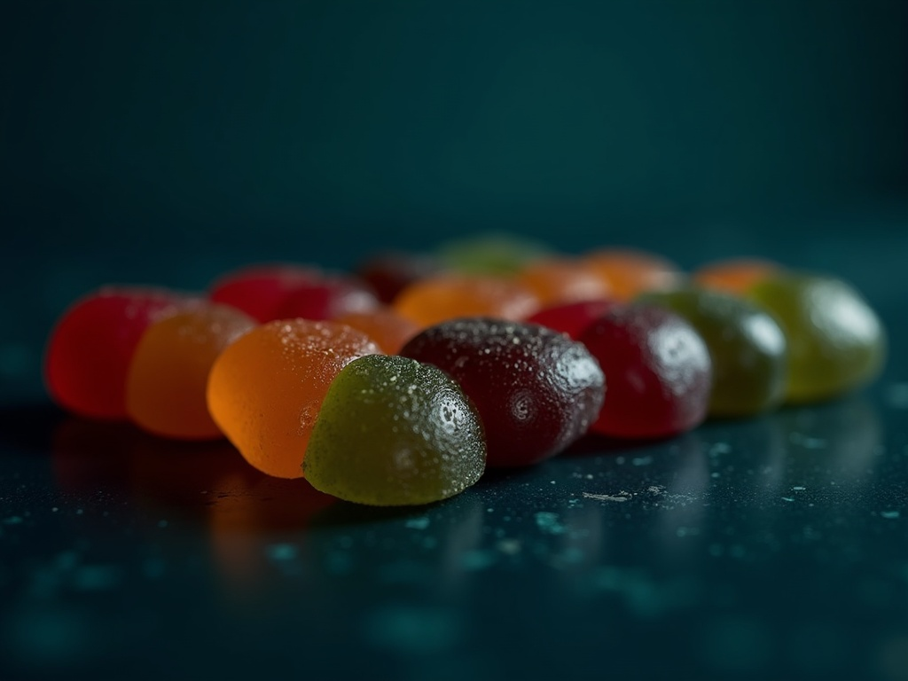

One partner, one PO
Edibles route through one purchase order and one point of contact, the coordinated partner that already handles the rest of your catalog, so adding a format never adds a vendor.

Flagship · operator to operatorA per-strain robotics line with a human-QC finish - the proven flagship the whole shop is built around.
See the flagship →Products
Services

Cannabis edibles and infused products, made to spec through BatchWorks, the full-service one-stop for licensed Nevada brands. Edibles is a partner-facilitated vertical: we coordinate vetted kitchens against your dose and format spec so you ship the SKU on your timeline, not theirs. The in-house flagship is pre-roll.
Spec-controlled · dose verified per lot · edibles made to your specMaking edibles the hard way means commissioning or licensing a commercial kitchen of your own, the same headcount math that traps brands in a manual roll room. A semi-manual operation runs on a 6-10 person crew; a 10-person payroll, the equipment, the buildout and a fresh compliance surface all land before a single unit ships. That is fixed cost you carry whether or not the SKU sells. We turn it into something you plug into instead of something you staff up.
Brands want a single coordinated partner for the whole program, so edibles runs through the same relationship as everything else you make with us, never a separate vendor to stand up and manage.
Edibles route through one purchase order and one point of contact, the coordinated partner that already handles the rest of your catalog, so adding a format never adds a vendor.
You set the format, the dose target and the finish; we hold the partner to it, with a COA per lot. Partner-facilitated does not mean hands-off.
Dose, homogeneity and labeling run to Nevada cannabis requirements and are confirmed on the panel, not improvised in a back room.
DOSING to specLABEL compliant
Nevada brands want one full-service one-stop partner so the edible menu can run broad, and the honesty stays plain: these formats are coordinated through vetted kitchens, not run on our own floor. Each family is finished to your dose and returned with its own lot panel.
The same yield discipline, applied to your batch.
The pre-roll flagship runs at ~95% yield, a measurable yield of roughly ~95% average against 80-85% on a manual line, and that 95% yield discipline is the standard the edibles partners are held to. Recovered material is recovered margin: the gap between a sloppy run and a controlled one is product you can actually sell.
Representative metrics, marked swappable, real lot data swaps in when supplied.
Route edibles through BatchWorks and you retire a whole operation of your own: the buildout, a crew of 6-10, the equipment depreciation, a second compliance surface to keep audited. A 10-person kitchen payroll turns into a per-unit line you pay only as you produce, so the line launches without the overhead behind it.
Edibles is one vertical under the BatchWorks umbrella; the flagship pre-roll line is the one we run in-house, and everything around it is coordinated to your spec.
No. Edibles is partner-facilitated: we coordinate vetted kitchens to your spec and hold them to a COA per lot. Pre-roll is the one line we operate ourselves, named plainly rather than implying a line we do not own.
Dose, homogeneity and labeling are set to your spec and meet Nevada cannabis rules, checked on the lab panel for every lot.
Quoted per program; a pilot can move on a short 24-hour scope turnaround once specs are set. No minimums: there is no 1,000-unit floor to clear before you start.
Edibles is priced the way the whole shop is priced: a variable per-unit cost quoted to your format mix, volume and dose. It is quote-only pricing, no public number, because the right rate depends on your program. The point is the shape of the cost, not a sticker price.
A fixed kitchen payroll becomes a per-unit cost you spend only when you produce. No minimums and no 1,000-unit floor, so a pilot and a full launch are priced on the same path, scaled to your volume. Tell us your SKUs and your volume and the quote follows your format mix.
MODEL per-unitMINIMUMS nonePRICING quote-only
Quote-only pricing · no minimums · tell us your SKUs and your volume
Ready when you are